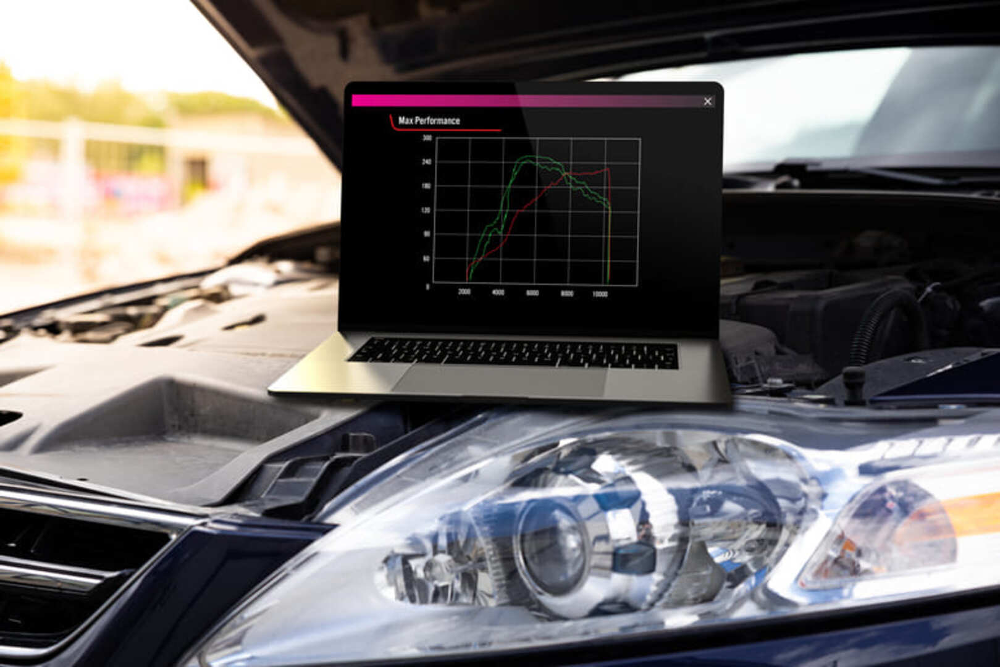

Modificaciones
Los golf gti (en la mayoria de sus generaciones, principalmente de las mk4 en adelante) son autos altamente modificables por bajos montos llevandolos a autos verdaderamente violentos ya sea esteticamente o en performance.
Modificaciones Mas Comunes:
- Reprogramacion
- Sistema De Escape
- Admision
- Reprogrmacion:
- Una reprogramación de motor es un cambio o modificación en la programación almacenada por la memoria de la unidad de control electrónico (ECU) de un automóvil u otro vehículo para lograr un rendimiento superior, ya sea más potencia, emisiones más limpias o una mejor eficiencia de combustible. 
- Una de las empresas mas renocidas en lo que es grupo VAG en reprogramaciones son APR y REVO, 2 mounstruos de la industria.